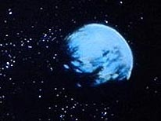
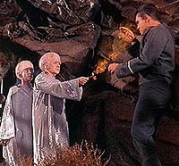
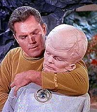
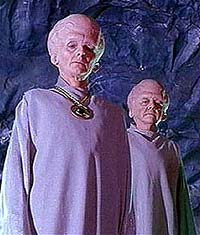

Talosianos
Talosians
| Planeta natal: |
Talos
IV |
| Quadrante: |
Alfa |
| Tipo: |
humanide |
| Alinhamento: |
neutro |
Histria
 Os
Talosianos so aliengenas agressivos e poderosos que
habitam o subsolo do planeta Talos IV. H uma proibio
expressa de que naves da Frota Estelar visitem o sistema de
Talos, composto por dez planetas. A infrao, punvel
com a morte, foi estabelecida pela Ordem Geral 7, em razo
da incapacidade de garantir a segurana de qualquer humano na
superfcie do planeta.
O primeiro contato da humanidade com os Talosianos
aconteceu em 2236, quando a nave SS Columbia se
chocou contra Talos IV. Entretanto, o destino do veculo
cientfico s ficou conhecido em 2254, quando a Enterprise
(NCC-1701), sob o comando do capito Christopher Pike,
chegou ao planeta, respondendo a um pedido de chamado.
 L,
Pike foi capturado pelos Talosianos. Ele foi colocado junto
a uma mirade de outras criaturas e a uma outra humana, Vina,
a nica sobrevivente do acidente da Columbia. Os Talosianos
queriam induzir o capito a procriar, no intuito de formar uma
comunidade humana que pudesse reconstruir sua civilizao e
tornar a superfcie novamente habitvel.
A superfcie de Talos IV havia sido devastada por uma
guerra nuclear ocorrida h centenas de milhares de anos, travada
pelos prprios Talosianos. O inverno nuclear j estava no
fim quando Pike chegou ao planeta, mas os aliengenas j
no eram mais capazes de salvar sua civilizao sozinhos.
Depois da guerra, os sobreviventes se mudaram para o subterrneo,
onde desenvolveram seus poderes mentais enormemente. Eles
adquiriram a capacidade de induzir iluses em outros seres, e,
mais que isso, reviv-las como se estivessem acontecendo. Na
impossibilidade de viver uma vida ativa, os Talosianos
passaram os milnios capturando criaturas e revivendo suas vidas
por meio de seu poder de iluso.
 Em
2254, Pike conseguiu fugir, mas foi levado de volta
a Talos por Spock em 2267 (contrariando a Ordem
Geral 7), para que pudesse ter uma sobrevida agradvel com a
ajuda das iluses Talosianas, depois que um acidente o
colocou totalmente imobilizado em uma cadeira de rodas.
Acredita-se que Pike e Vina tenham afinal produzido
filhos e colaborado na reconstruo da sociedade Talosiana,
mas nenhuma expedio voltou l para verificar, em razo da
proibio estabelecida pela Frota Estelar.
Fisiologia
Os Talosianos tm estrutura humanide, com tamanho menor.
Isso facilita o equilbrio sobre duas pernas, compensando pelo
enorme crnio, cerca de trs vezes o de um humano.
 Graas
a seu volumoso intelecto, os Talosianos tm poderes
mentais superiores. Eles conseguem induzir iluses e ler
pensamentos de outras formas de vida --provavelmente a mais
poderosa espcie teleptica conhecida pela Federao.
Sua nica deficincia nesse sentido a incapacidade de ler
mentes cujos pensamentos estejam tomados por emoes primitivas,
como dio.
Seu tempo de vida mdio de vrias centenas de anos, mas
finito. Ademais, por conta da catstrofe nuclear que destruiu a
superfcie de seu planeta, os Talosianos foram ao longo
dos milnios se tornando estreis, levando sua espcie a um
beco sem sada.
Cultura
Depois que a guerra destruir a rica cultura Talosiana,
pouco restou. Os sobreviventes que se desenvolveram no subsolo se
concentraram em aperfeioar seus poderes mentais. Quando
contatada pela Federao, a cultura Talosiana se
resumia a colecionar espcimes em seu zoolgico e reviver suas
vidas e fantasias, obtendo assim experincias de todas as partes
da galxia, sem mesmo deixar seu prprio mundo.
|